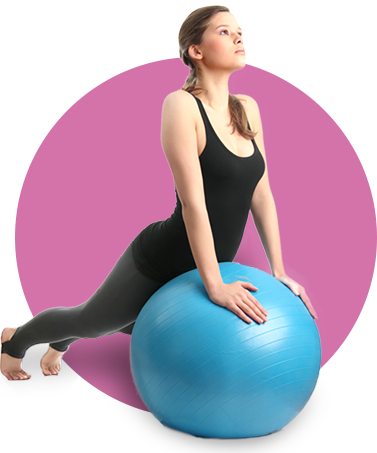
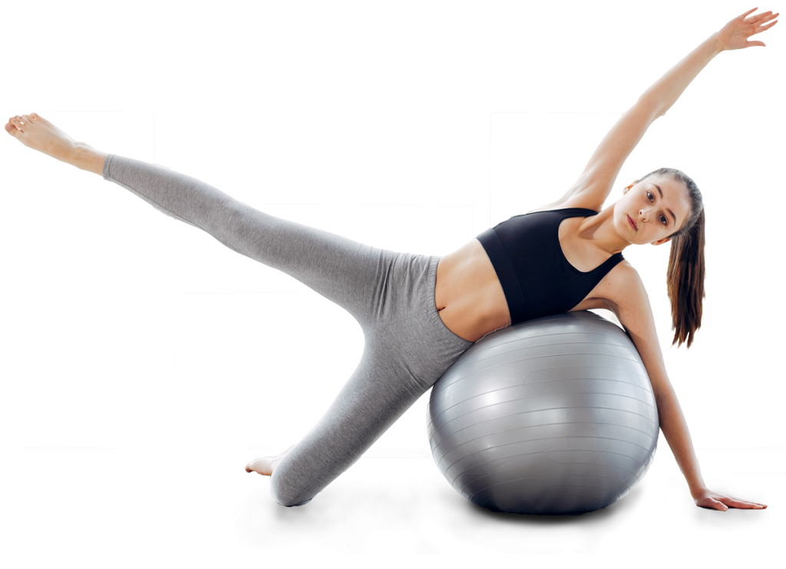

O que é Pilates?
Pilates é um conjunto de exercícios que são realizados no solo ou em equipamentos exclusivos, que visa o total e completo controle e conexão entre corpo e mente, devolvendo e restaurando a saúde de indivíduos em condições patológicas, assim como promovendo um aumento da qualidade de vida para pessoas saudáveis.
Com isso, ele traz alguns benefícios como
- Melhora da postura
- Aumento do tônus muscular
- Maior mobilidade articular
- Alívio de tensões
- Evolução da marcha e corrida
- Incremento da flexibilidade
A consciência corporal obtida com o pilates e o foco nos músculos do centro do corpo (conhecidos como core) fazem com que as curvas naturais da coluna sejam respeitadas, o que melhora a postura. Com isso, o exercício pode reduzir dores nas costas.
Os exercícios do pilates trabalham com a contração e força dos músculos, além de sua flexibilidade. Com isso, as fibras musculares são rompidas e reconstruídas, possibilitando a troca de massa gorda por muscular e um melhor contorno corporal, com redução de medidas.
Como os exercícios trabalham o corpo de forma global, as articulações também são estimuladas, o que torna o corpo mais móvel e facilita os movimentos do dia a dia.
Por focar na respiração e na concentração na hora de executar um movimento, o pilates pode ajudar na redução do estresse. Esse benefício é incrementado pelo ambiente em que o exercício é realizado: normalmente salas tranquilas e com som ambiente agradável e calmo.
Como movimentos globais são estimulados durante o pilates, isso faz com que movimentos comuns, como a caminhada, se tornem mais simples e melhor executados. Além disso, por meio da reeducação da respiração e da concentração adquiridas no método, correr pode se tornar uma atividade mais prazerosa e com resultados mais rápidos. A consciência corporal desenvolvida no pilates auxilia o equilíbrio do corredor e o alinhamento do corpo.
Os exercícios voltados para este benefício são aqueles que enfatizam o alongamento global do corpo. Trabalhando a extensão de músculos e articulações, percebemos mudanças positivas em atividades como amarrar os sapatos e vestir as calças, por exemplo.